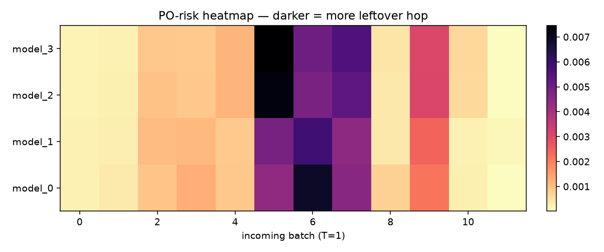
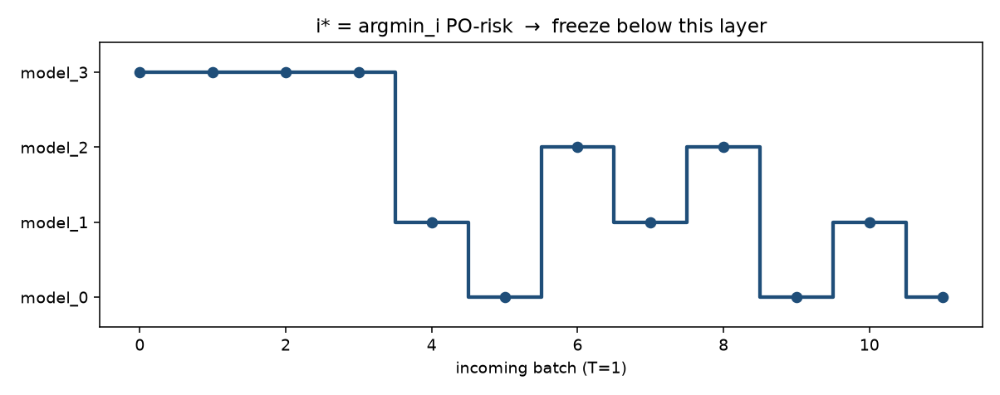
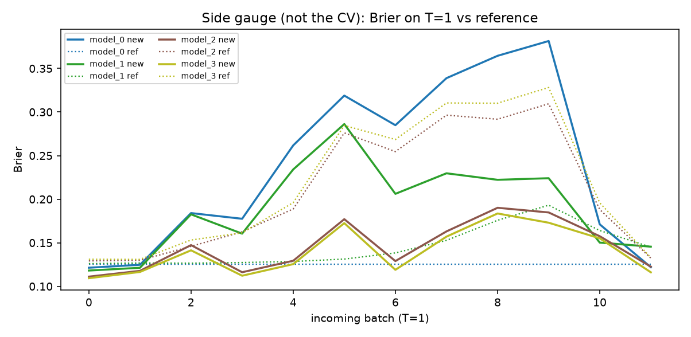

electricity (NSW, ordered in time). n_ref=10000, hidden=[64, 32],
k=3 layer groups → model_0…model_3.
新 batch 是 T=1。μ 来自该 freeze-depth 的 AnyMLP；PO-risk 是 leftover hop。
i* = argmini PO-risk：只更新最上面 i* 层，下面冻住。
建议：freeze below top 2 layer(s); train model_2（median i* = 2）



| model | PO-risk | Brier new | Brier ref |
|---|---|---|---|
| model_0 | 1.34e-05 | 0.122 | 0.1256 |
| model_1 | 0.000129 | 0.1455 | 0.145 |
| model_2 ★ | 3.165e-05 | 0.1226 | 0.1323 |
| model_3 | 2.034e-05 | 0.1161 | 0.1329 |
Brier 只是 side gauge，不是 CV。HH chosen 不是这张表的 Y。